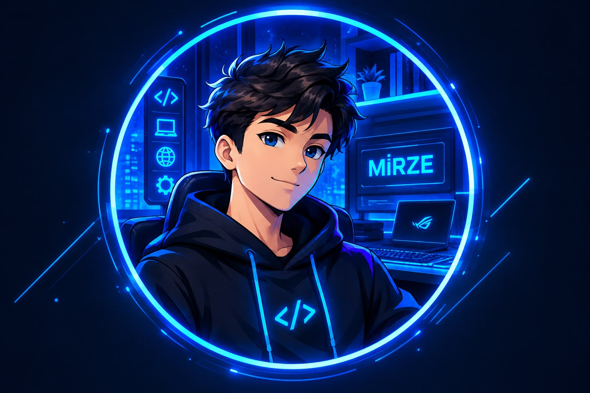

Ana Sayfa
Hakkımda
İletişim

MERHABA, BEN MİRZE!
HAYALLERİMİ KODLARLA GERÇEĞE DÖNÜŞTÜRÜYORUM ⚡
Teknoloji dünyama hoş geldin.
Hayallerimi ve hedeflerimi keşfetmeye hazır mısın?
Beni Keşfet
⬆️ Yukarı Çık